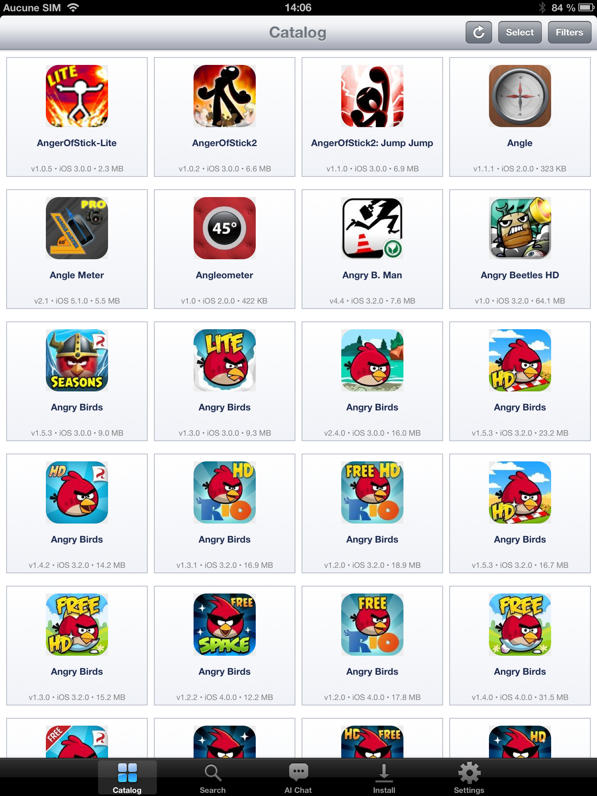

AppDrop
Browse 157,000 archived iOS apps from 2008–2014 and install them on your jailbroken device, with built-in AI search.
iOS 5 – 10 · armv7What's new v1.5
- iOS 5 support restored — iPad 1, iPhone 3GS, iPod touch 3 and other devices stuck at iOS 5.1.1 can now run AppDrop
- Cydia-only distribution — no more manual
.ipatransfer via SSH / iFunbox / iFile - In-app updater redirects to Cydia — one tap on the Updates row opens this page
- IPA Installer Console as a hard dependency — installed automatically by Cydia, no more in-app onboarding alert
- AppSync Unified OR-clause — works with both
net.angelxwind.appsyncunifiedandcom.linusyang.appsync - New app icon — fresh glass + glow download glyph, iOS 6 rounded corners
- Multi-version source — install any previous release via Cydia's Modify → Versions
- Tested on iPad 1 (iOS 5.1.1), iPad 4 (iOS 6.1.3), iPhone 5 (iOS 6.1.4), iPad mini 2 (iOS 10.3.3)
Full changelog: github.com/AdrienRL1/AppDrop/releases
What it does
AppDrop bundles the entire IPA Archive catalog (≈ 157k vintage iOS apps) right in the binary, so the catalog is instant and works offline. Search by title, browse by year, or describe what you want in plain language and the built-in AI finds it for you. Tap install — the app delegates to IPA Installer Console (already required by this package) and your jailbreak does the rest.
Highlights
- 157k vintage app catalog — bundled, instant, offline
- Grounded AI search — describe an app in any language, the LLM picks from the real catalog (never invents)
- Device-aware AI — knows your iPad/iPhone model + iOS version, gives compatibility advice tailored to you
- 7 languages — EN · FR · ES · DE · PT‑BR · JA · ZH‑Hans, auto-detected
- Multi-select install — queue dozens of apps in one batch with live progress + cancel
- Parallel chunked downloads — speed configurable in Settings
- iPad grid layout — density slider, filters button, swipe-friendly UI
- Skeuomorphic iOS 6 look — fits naturally into a jailbroken device, all iOS versions
- No backend, no account, no tracking — talks directly to archive.org and pollinations.ai
Screenshots

Catalog grid on iPad — multi-select & install in one tap

AI chat: describe an app and it finds the real ones

Search tab — instant title lookup over the 157k catalog

Filters — narrow by year, device class, iOS version
Requirements
- A jailbroken device on iOS 5 → iOS 10 (armv7 / 32-bit)
- AppSync Unified — needed to install unsigned IPAs (auto-installed as a dependency)
- IPA Installer Console by autopear (or
appinst) — the actual install tool (auto-installed as a dependency) - A working internet connection for downloads and the optional AI features
Enjoying AppDrop? Free + ad-free forever.
If it saved you the trouble of manual sideloading, a small tip helps me keep maintaining the catalog 💙
💖 Tip on PayPal